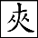

此回亦有本而筆，非泛泛之筆也。
只看他題綱用「尷尬」二字於邢夫人，可知包藏含蓄文字之中，莫能量也。
裹脚與纏頭，欲覓終身伴。顧影自為憐，靜住深深院。 好事不稱心，惡語將人慢。誓死守香閨，遠却楊花片。
話說林黛玉直到四更將闌，方漸漸的睡去，暫且無話。
如今且說鳳姐兒因見邢夫人叫他，不知何事，忙另穿戴了一番，坐車過來。邢夫人將房內人遣出，悄向鳳姐兒道：「叫你來不為別事，有一件為難的事，老爺託我，我不得主意，先和你商議。老爺因看上了老太太的鴛鴦，要他在房裡，叫我和老太太討去。我想這倒平常有的事，只是怕老太太不給，你可有法子？」鳳姐兒聽了，忙道：「依我說，竟別碰這個釘子去。老太太離了鴛鴦，飯也吃不下去的，那裡就捨得了？况且平日說起閒話來，老太太常說，老爺如今上了年紀，作什麽左一個小老婆右一個小老婆放在屋裡，沒的耽誤了人家。放著身子不保養，官兒也不好生作去，成日家和小老婆喝酒。太太聽這話，很喜歡老爺呢？這會子回避還恐回避不及，倒拿草棍兒戳老虎的鼻子眼兒去了！太太別惱，我是不敢去的。明放著不中用，而且反招出沒意思來。老爺如今上了年紀，行事不妥，太太該勸纔是。比不得年輕，作這些事無礙。如今兄弟、侄兒、兒子、孫子一大群，還這麽鬧起來，怎樣見人呢？」邢夫人冷笑道：「大家子三房四妾的也多，偏咱們就使不得？我勸了也未必依。就是老太太心愛的丫頭，這麽鬍子蒼白了又作了官的一個大兒子，要了作房裡人，也未必好駁回的。我叫了你來，不過商議商議，你先派上了一篇不是。也有叫你去的理？自然是我說去。你倒說我不勸，你還不知道那性子的，勸不成，先和我惱了。」
鳳姐兒知道邢夫人禀性愚强，只知承順賈赦以自保，次則婪聚財貨為自得，家下一應大小事務，俱由賈赦擺佈。凡出入銀錢事務，一經他手，便克嗇異常，以賈赦浪費為名，「須得我就中儉省，方可償補」，兒女奴僕，一人不靠，一言不聽的。如今又聽邢夫人如此的話，便知他又弄左性，勸了不中用，連忙陪笑說道：「太太這話說的極是。我能活了多大，知道什麽輕重？想來父母跟前，別說一個丫頭，就是那麽大的活寶貝，不給老爺給誰？背地裡的話那裡信得？我竟是個呆子。璉二爺或有日得了不是，老爺太太恨的那樣，恨不得立刻拿來一下子打死；及至見了面，也罷了，依舊拿著老爺太太心愛的東西賞他。如今老太太待老爺，自然也是那樣了。依我說，老太太今兒喜歡，要討今兒就討去。我先過去哄著老太太發笑，等太太過去了，我搭訕著走開，把屋子裡的人我也帶開，太太好和老太太說的。給了更好，不給也沒妨礙，衆人也不知道。」邢夫人見他這般說，便又喜歡起來，又告訴他道：「我的主意先不和老太太要。老太太要說不給，這事便死了。我心裡想著先悄悄的和鴛鴦說。他雖害臊，我細細的告訴了他，他自然不言語，就妥了。那時再和老太太說，老太太雖不依，擱不住他願意，常言『人去不中留』，自然這就妥了。」鳳兒姐笑道：「到底是太太有智謀，這是千妥萬妥的。別說是鴛鴦，憑他是誰，那一個不想巴高望上，不想出頭的？這半個主子不做，倒願意做個丫頭，將來配個小子就完了。」邢夫人笑道：「正是這個話了。別說鴛鴦，就是那些執事的大丫頭，誰不願意這樣呢。你先過去，別露一點風聲，我吃了晚飯就過來。」
鳳姐兒暗想：「鴛鴦素習是個可惡的，雖如此說，保不嚴他就願意。我先過去了，太太後過去，若他依了便沒話說；倘或不依，太太是多疑的人，只怕就疑我走了風聲，使他拿腔作勢的。那時太太又見了應了我的話，羞惱變成怒，拿我出起氣來，倒沒意思。不如同著一齊過去了，他依也罷，不依也罷，就疑不到我身上了。」想畢，因笑道：「方纔臨來，舅母那邊送了兩籠子鵪鶉，我吩咐他們炸了，原要趕太太晚飯上送過來的。我纔進大門時，見小子們抬車，說太太的車拔了縫，拿去收拾去了。不如這會子坐了我的車一齊過去倒好。」邢夫人聽了，便命人來換衣服。鳳姐忙著伏侍了一回，娘兒兩個坐車過來。鳳姐兒又說道：「太太過老太太那裡去，我若跟了去，老太太若問起我過去作什麽的，倒不好。不如太太先去，我脫了衣裳再來。」
邢夫人聽了有理，便自往賈母處，和賈母說了一回閒話，便出來假託往王夫人房裡去，從後門出去，打鴛鴦的臥房前過。只見鴛鴦正然坐在那裡做針綫，見了邢夫人，忙站起來。邢夫人笑道：「做什麽呢？我瞧瞧，你紮的花兒越發好了。」一面說，一面便接他手內的針綫瞧了一瞧，只管贊好。放下針綫，又渾身打量。只見他穿著半新的藕合色的綾襖，青緞掐牙背心，下面水綠裙子。蜂腰削背，鴨蛋臉面，烏油頭髮，高高的鼻子，兩邊腮上微微的幾點雀斑。鴛鴦見這般看他，自己倒不好意思起來，心裡便覺詫異，因笑問道：「太太，這會子不早不晚的，過來做什麽？」邢夫人使個眼色兒，跟的人退出。邢夫人便坐下，拉著鴛鴦的手笑道：「我特來給你道喜來了。」鴛鴦聽了，心中已猜著三分，不覺紅了臉，低了頭不發一言。聽邢夫人道：「你知道你老爺跟前竟沒有個可靠的人， 
鳳姐兒早換了衣服，因房內無人，便將此話告訴了平兒。平兒也搖頭笑道：「據我看，此事未必妥。平常我們背著人說起話來，聽他那主意，未必是肯的。也只說著瞧罷了。」鳳姐兒道：「太太必來這屋裡商議。依了還可，若不依，白討個臊，當著你們，豈不臉上不好看。你說給他們炸鵪鶉，再有什麽配幾樣，預備吃飯。你且別處逛逛去，估量著去了再來。」平兒聽說，照樣傳給婆子們，便逍遙自在的往園子裡來。
這裡鴛鴦見邢夫人去了，必在鳳姐兒房裡商議去了，必定有人來問他的，不如躲了這裡，終不免女兒氣，不知躲在那裡方無人來囉唣，寫得可憐可愛。因找了琥珀說道：「老太太要問我，只說我病了，沒吃早飯，往園子裡逛逛就來。」琥珀答應了。鴛鴦也往園子裡來，各處遊玩，不想正遇見平兒。平兒因見無人，便笑道：「新姨娘來了！」鴛鴦聽了，便紅了臉，說道：「怪道你們串通一氣來算計我！等著我和你主子鬧去就是了。」平兒聽了，自悔失言，便拉他到楓樹底下，隨筆帶出妙景。正愁園中草木黃落，不想看此一句，便恍如置身於千霞萬錦、絳雪紅霜之中矣。坐在一塊石上，越性把方纔鳳姐過去回來所有的形景言詞、始末原由告訴與他。鴛鴦紅了臉，向平兒冷笑道：「這是咱們好，比如襲人、琥珀、素雲、紫鵑、彩霞、玉釧兒、麝月、翠墨，跟了史姑娘去的翠縷，死了的可人和金釧，去了的茜雪，余按此一算，亦是十二釵，真鏡中花，水中月，雲中豹，林中之鳥，穴中之鼠，無數可考，無人可指，有跡可追，有形可據，九曲八折，遠響近影，迷離煙灼，縱橫隱現，千奇百怪，眩目移神，現千手千眼大遊戲法也。脂硯齋。連上你我，這十來個人，從小兒什麽話兒不說？什麽事兒不作？這如今因都大了，各自幹各自的去了，此語已可傷，猶未「各自幹各自去」，後日更有各自之處也，知之乎！然我心裡仍是照舊，有話有事，並不瞞你們。這話我且放在你心裡，且別和二奶奶說：別說大老爺要我做小老婆，就是太太這會子死了，他三媒六聘的娶我去作大老婆，我也不能去。」
平兒方欲笑答，只聽山石背後哈哈的笑道：「好個沒臉的丫頭，虧你不怕牙磣。」二人聽了不免吃了一驚，忙起身向山石背後找尋，不是別個，却是襲人笑著走了出來問：「什麽事情？告訴我。」說著，三人坐在石上，平兒又把方纔的話說與襲人聽。襲人道：「真真這話論理不該我們說，這個大老爺太好色了，略平頭正臉的，他就不放手了。」平兒道：「你既不願意，我教你個法子，不用費事就完了。」鴛鴦道：「什麽法子？你說來我聽。」平兒笑道：「你只和老太太說，就說已經給了璉二爺了，大老爺就不好要了。」鴛鴦啐道：「什麽東西！你還說呢！前兒你主子不是這麽混說的？誰知應到今兒了！」襲人笑道：「他們兩個都不願意，我就和老太太說，叫老太太說把你已經許了寶玉了，大老爺也就死了心了。」鴛鴦又是氣，又是臊，又是急，因駡道：「兩個蹄子不得好死的！人家有為難的事，拿著你們當正經人，告訴你們與我排解排解，你們倒替換著取笑兒。你們自為都有了結果了，將來都是做姨娘的。據我看，天下的事未必都遂心如意。你們且收著些兒，別忒樂過了頭兒！」二人見他急了，忙陪笑央告道：「好姐姐，別多心，咱們從小兒都是親姊妹一般，不過無人處偶然取個笑兒。你的主意告訴我們知道，也好放心。」鴛鴦道：「什麽主意！我只不去就完了。」平兒搖頭道：「你不去未必得幹休。大老爺的性子你是知道的。雖然你是老太太房裡的人，此刻不敢把你怎麽樣，將來難道你跟老太太一輩子不成？也要出去的。那時落了他的手，倒不好了。」鴛鴦冷笑道：「老太太在一日，我一日不離這裡；若是老太太歸西去了，他橫竪還有三年的孝呢，沒個娘纔死了他先納小老婆的！等過三年，知道又是怎麽個光景，那時再說。縱到了至急為難，我剪了頭髮作姑子去；不然，還有一死。一輩子不嫁男人，又怎麽樣？樂得乾淨呢！」平兒襲人笑道：「真這蹄子沒了臉，越發信口兒都說出來了。」鴛鴦道：「事到如此，臊一會怎麽樣！你們不信，慢慢的看著就是了。太太纔說了，找我老子娘去。我看他南京找去！」平兒道：「你的父母都在南京看房子，沒上來，終久也尋的著。現在還有你哥哥嫂子在這裡。可惜你是這裡的家生女兒，不如我們兩個人是單在這裡。」鴛鴦道：「家生女兒怎麽樣？『牛不吃水强按頭』？我不願意，難道殺我的老子娘不成？」
正說著，只見他嫂子從那邊走來。襲人道：「當時找不著你的爹娘，一定和你嫂子說了。」鴛鴦道：「這個娼婦專管是個『九國販駱駝的』，聽了這話，他有個不奉承去的！」說話之間，已來到跟前。他嫂子笑道：「那裡沒找到，姑娘跑了這裡來！你跟了我來，我和你說話。」平兒襲人都忙讓坐。他嫂子說：「姑娘們請坐，我找我們姑娘說句話。」襲人平兒都裝不知道，笑道：「什麽話這樣忙？我們這裡猜謎兒贏手批子打呢，等猜了這個再去。」鴛鴦道：「什麽話？你說罷。」他嫂子笑道：「你跟我來，到那裡我告訴你，橫竪有好話兒。」鴛鴦道：「可是大太太和你說的那話？」他嫂子笑道：「姑娘既知道，還奈何我！快來，我細細的告訴你可是天大的喜事。」鴛鴦聽說，立起身來，照他嫂子臉上下死勁啐了一口，指著他駡道：「你快夾著屄嘴離了這裡，好多著呢！什麽『好話』！宋徽宗的鷹，趙子昂的馬，都是好畫兒。什麽『喜事』！狀元痘兒灌的漿兒又滿是喜事。怪道成日家羨慕人家女兒作了小老婆了，一家子都仗著他橫行霸道的，一家子都成了小老婆了！看的眼熱了，也把我送在火坑裡去。我若得臉呢，你們外頭橫行霸道，自己就封自己是舅爺了。我若不得臉敗了時，你們把忘八脖子一縮，生死由我。」一面說，一面哭，平兒襲人攔著勸。
他嫂子臉上下不來，因說道：「願意不願意，你也好說，不犯著牽三挂四的。俗語說，『當著矮人，別說矮話』。姑奶奶駡我，我不敢還言；這二位姑娘並沒惹著你，小老婆長小老婆短，大家臉上怎麽過得去？」襲人平兒忙道：「你倒別這麽說，他也並不是說我們，你倒別牽三挂四的。你聽見那位太太、太爺們封我們做小老婆？况且我們兩個也沒有爹娘、哥哥兄弟在這門子裡仗著我們橫行霸道的。他駡的人自有他駡的，我們犯不著多心。」鴛鴦道：「他見我駡了他，他臊了，沒的蓋臉，又拿話挑唆你們兩個，幸虧你們兩個明白。原是我急了，也沒分別出來，他就挑出這個空兒來。」他嫂子自覺沒趣，賭氣去了。鴛鴦氣得還駡，平兒襲人勸他一回，方纔罷了。
平兒因問襲人道：「你在那裡藏著做甚麽的？我們竟沒看見你。」襲人道：「我因為往四姑娘房裡瞧我們寶二爺去的，誰知遲了一步，說是來家裡來了。我疑惑怎麽不遇見呢，想要往林姑娘家裡找去，又遇見他的人說也沒去。我這裡正疑惑是出園子去了，可巧你從那裡來了，我一閃，你也沒看見。後來他又來了。我從這樹後頭走到山子石後，我却見你兩個說話來了，誰知你們四個眼睛沒見我。」
一語未了，又聽身後笑道：「四個眼睛沒見你？你們六個眼睛竟沒見我！」三人唬了一跳，回身一看，不是別個，正是寶玉走來。通部情案，皆必從石兄挂號，然各有各稿，穿插神妙。襲人先笑道：「叫我好找，你那裡來？」寶玉笑道：「我從四妹妹那裡出來，迎頭看見你來了，我就知道是找我去的，我就藏了起來哄你。看你低著頭過去了，進了院子就出來了，逢人就問。我在那裡好笑，只等你到了跟前唬你一跳的，後來見你也藏藏躲躲的，我就知道也是要哄人了。我探頭往前看了一看，却是他兩個，所以我就繞到你身後。你出去，我就躲在你躲的那裡了。」平兒笑道：「咱們再往後找找去，只怕還找出兩個人來也未可知。」寶玉笑道：「這可再沒了。」鴛鴦已知話俱被寶玉聽了，只伏在石頭上裝睡。寶玉推他笑道：「這石頭上冷，咱們回房裡去睡，豈不好？」說著拉起鴛鴦來，又忙讓平兒來家坐吃茶。平兒和襲人都勸鴛鴦走，鴛鴦方立起身來，四人竟往怡紅院來。寶玉將方纔的話俱已聽見，心中自然不快，只默默的歪在床上，任他三人在外間說笑。
外邊邢夫人因問鳳姐兒鴛鴦的父母，鳳姐因回說：「他爹的名字叫金彩，姓金名彩，由「鴛鴦」二字化出，因文而生文也。兩口子都在南京看房子，從不大上京。他哥哥金文翔，更妙！現在是老太太那邊的買辦。他嫂子也是老太太那邊漿洗的頭兒。」只鴛鴦一家，寫的榮府中人各有各職，如目已睹。邢夫人便令人叫了他嫂子金文翔媳婦來，細細說與他。金家媳婦自是喜歡，興興頭頭找鴛鴦，只望一說必妥，不想被鴛鴦搶白一頓，又被襲人平兒說了幾句，羞惱回來，便對邢夫人說：「不中用，他倒駡了我一場。」因鳳姐兒在旁，不敢提平兒，只說：「襲人也幫著他搶白我，也說了許多不知好歹的話，回不得主子的。太太和老爺商議再買罷。諒那小蹄子也沒有這麽大福，我們也沒有這麽大造化。」邢夫人聽了，因說道：「又與襲人什麽相干？他們如何知道的？」又問：「還有誰在跟前？」金家的道：「還有平姑娘。」鳳姐兒忙道：「你不該拿嘴巴子打他回來？我一出了門，他就逛去了；回家來連一個影兒也摸不著他！他必定也幫著說什麽呢！」金家的道：「平姑娘沒在跟前，遠遠的看著倒像是他，可也不真切，不過是我白忖度。」鳳姐便命人去：「快打了他來，告訴他我來家了，太太也在這裡，請他來幫個忙兒。」豐兒忙上來回道：「林姑娘打發了人下請字請了三四次，他纔去了。奶奶一進門我就叫他去的。林姑娘說：『告訴你奶奶，我煩他有事呢。』」鳳姐兒聽了方罷，故意的還說：「天天煩他，有些什麽事！」
邢夫人無計，吃了飯回家，晚間告訴了賈赦。賈赦想了一想，即刻叫賈璉來說：「南京的房子還有人看著，不止一家，即刻叫上金彩來。」賈璉回道：「上次南京信來，金彩已經得了痰迷心竅，那邊連棺材銀子都賞了，不知如今是死是活，便是活著，人事不知，叫來也無用。他老婆子又是個聾子。」賈赦聽了，喝了一聲，又駡：「下流囚攮的，偏你這麽知道，還不離了我這裡！」唬得賈璉退出，一時又叫傳金文翔。賈璉在外書房伺候著，又不敢家去，又不敢見他父親，只得聽著。一時金文翔來了，小么兒們直帶入二門裡去，隔了五六頓飯的工夫纔出來去了。賈璉暫且不敢打聽，隔了一會，又打聽賈赦睡了，方纔過來。至晚間鳳姐兒告訴他，方纔明白。
鴛鴦一夜沒睡，至次日，他哥哥回賈母接他家去逛逛，賈母允了，命他出去。鴛鴦意欲不去，只怕賈母疑心，只得勉强出來。他哥哥只得將賈赦的話說與他，又許他怎麽體面，又怎麽當家作姨娘。鴛鴦只咬定牙不願意。他哥哥無法，少不得去回覆了賈赦。賈赦怒起來，因說道：「我這話告訴你，叫你女人向他說去，就說我的話：『自古嫦娥愛少年』，他必定嫌我老了，大約他戀著少爺們，多半是看上了寶玉，只怕也有賈璉。果有此心，叫他早早歇了心，我要他不來，此後誰還敢收？此是一件。第二件，想著老太太疼他，將來自然往外聘作正頭夫妻去。叫他細想，憑他嫁到誰家去，也難出我的手心。除非他死了，或是終身不嫁男人，我就伏了他！若不然時，叫他趁早回心轉意，有多少好處。」賈赦說一句，金文翔應一聲「是」。賈赦道：「你別哄我，我明兒還打發你太太過去問鴛鴦，你們說了，他不依，便沒你們的不是。若問他，他再依了，仔細你的腦袋！」
金文翔忙應了又應，退出回家，也不等得告訴他女人轉說，竟自已對面說了這話。把個鴛鴦氣的無話可回，想了一想，便說道：「便願意去，也須得你們帶了我回聲老太太去。」他哥嫂聽了，只當回想過來，都喜之不勝。他嫂子即刻帶了他上來見賈母。
可巧王夫人、薛姨媽、李紈、鳳姐兒、寶釵等姊妹並外頭的幾個執事有頭臉的媳婦，都在賈母跟前凑趣兒呢。鴛鴦喜之不盡，拉了他嫂子，到賈母跟前跪下，一行哭，一行說，把邢夫人怎麽來說，園子裡他嫂子又如何說，今兒他哥哥又如何說，「因為不依，方纔大老爺越性說我戀著寶玉，不然要等著往外聘，我到天上，這一輩子也跳不出他的手心去，終久要報仇。我是橫了心的，當著衆人在這裡，我這一輩子莫說是『寶玉』，便是『寶金』『寶銀』『寶天王』『寶皇帝』，橫竪不嫁人就完了！就是老太太逼著我，我一刀子抹死了，也不能從命！若有造化，我死在老太太之先；若沒造化，該討吃的命，伏侍老太太歸了西，我也不跟著我老子娘哥哥去，我或是尋死，或是剪了頭髮當尼姑去！若說我不是真心，暫且拿話來支吾，日後再圖別的，天地鬼神，日頭月亮照著嗓子，從嗓子裡頭長疔爛了出來，爛化成醬在這裡！」
原來他一進來時，便袖了一把剪子，一面說著，一面左手打開頭髮，右手便鉸。衆婆娘丫鬟忙來拉住，已剪下半綹來了。衆人看時，幸而他的頭髮極多，鉸的不透，連忙替他挽上。賈母聽了，氣的渾身亂戰，口內只說：「我通共剩了這麽一個可靠的人，他們還要來算計！」因見王夫人在旁，便向王夫人道：「你們原來都是哄我的！外頭孝敬，暗地裡盤算我。有好東西也來要，有好人也要，剩了這麽個毛丫頭，見我待他好了，你們自然氣不過，弄開了他，好擺弄我！」王夫人忙站起來，不敢還一言。千奇百怪，王夫人亦有罪乎？老人家遷怒之言必應如此。薛姨媽見連王夫人怪上，反不好勸的了。李紈一聽見鴛鴦的話，早帶了姊妹們出去。
探春有心的人，想王夫人雖有委曲，如何敢辯；薛姨媽也是親姊妹，自然也不好辯的；寶釵也不便為姨母辯；李紈、鳳姐、寶玉一概不敢辯；這正用著女孩兒之時，迎春老實，惜春小，因此窗外聽了一聽，便走進來陪笑向賈母道：「這事與太太什麽相干？老太太想一想，也有大伯子要收屋裡的人，小嬸子如何知道？便知道，也推不知道。」猶未說完，賈母笑道：「可是我老糊塗了！姨太太別笑話我。你這個姐姐他極孝順我，不像我那大太太一味怕老爺，婆婆跟前不過應景兒。可是委屈了他。」薛姨媽只答應「是」，又說：「老太太偏心，多疼小兒子媳婦，也是有的。」賈母道：「不偏心！」因又說道：「寶玉，我錯怪了你娘，你怎麽也不提我，看著你娘受委屈？」寶玉笑道：「我偏著娘說大爺大娘不成？通共一個不是，我娘在這裡不認，却推誰去？我倒要認是我的不是，老太太又不信。」賈母笑道：「這也有理。你快給你娘跪下，你說太太別委屈了，老太太有年紀了，看著寶玉罷。」寶玉聽了，忙走過去，便跪下要說；王夫人忙笑著拉他起來，說：「快起來，快起來，斷乎使不得。終不成你替老太太給我賠不是不成？」寶玉聽說，忙站起來。寶玉亦有罪了。
賈母又笑道：「鳳姐兒也不提我。」阿鳳也有了罪。◇奇奇怪怪之文，所謂《石頭記》不是作出來的。鳳姐兒笑道：「我倒不派老太太的不是，老太太倒尋上我了？」賈母聽了，與衆人都笑道：「這可奇了！倒要聽聽這不是。」鳳姐兒道：「誰教老太太會調理人，調理的水葱兒似的，怎麽怨得人要？我幸虧是孫子媳婦，若是孫子，我早要了，還等到這會子呢。」賈母笑道：「這倒是我的不是了？」鳳姐兒笑道：「自然是老太太的不是了。」賈母笑道：「這樣，我也不要了，你帶了去罷！」鳳姐兒道：「等著修了這輩子，來生託生男人，我再要罷。」賈母笑道：「你帶了去，給璉兒放在屋裡，看你那沒臉的公公還要不要了！」鳳姐兒道：「璉兒不配，就只配我和平兒這一對燒糊了的卷子和他混罷。」說的衆人都笑起來了。
丫鬟回說：「大太太來了。」王夫人忙迎了出去。要知端的——
總評：鴛鴦女從熱鬧中別具一副腸胃，「不輕許人」一事，是宦途中藥石仙方。
本章完!